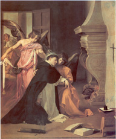
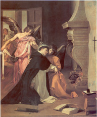

|  |
|---|
Textum ab A. Ferrua Albae 1968 editum
recognovit Enrique Alarcón et instruxit
recognovit Enrique Alarcón et instruxit

|  |
|---|

[TC2] Thomas Cantimpratanus, Bonum universale de apibus, lib. 1 cap. 20 n. 10 Haec, et his similia cum quidam nobilis adolescens de Romanorum partibus, Thomas de Aquino nomine, vereretur; intravit ordinem Fratrum Praedicatorum Bononiae. Qui cum Domino ibidem in magno fervore et alacritate spiritus deserviret, invidit diabolus, et instigavit parentes eius, et maxime duos fratres illius potentissimos ac feroces: qui obtinuerunt a Papa, ut ad curiam per litteras Apostolicas citaretur. Qui, ut comparuit, iussus est habitum ordinis deponere, et dignitatibus ecclesiasticis insigniri. Quod cum sperneret mira constantia, furtim a suis fratribus quos praediximus raptus est, et in carcerem clam detrusus. Ubi cum gravi inedia, frigore et penuria affligeretur, numquam tamen tortores eius efficere potuerunt, ut saltem habitum suscepti ordinis, vel cibos mutare vellet. Et his omnibus nequius cogitantes per quod possent iuvenilem animum evertere, secum mulieres in carcere per tempus aliquod concluserunt. Qui fortius quam prius, spretis illecebris, sic annis duobus, vel tribus in carcere perduravit. Romam ergo adiens magister ordinis Praedicatorum pie et beate memoriae Ioannes, super raptu et incarceratione fratris Imperatori Federico conquestus est. Qui re examinata, et inventa ut dictum est, praefatos nobiles quaesivit ad poenam. Nec ullo modo mortis sententiam evasissent, si dictus Magister in querimonia perstitisset: sed veritus est iudicium sanguinis, et Imperatoris animum mitigavit. Graviter enim audita tanta inhumanitate fratrum in fratrem Caesar commotus erat. Deterriti ergo dicti fratres fratrem solverunt, qui transmissus est Parisios a magistro ordinis eiusdem. Nec diu Sathan distulit insidias adolescenti spargere. Instinctu enim fratrum suorum carnalium, et amicorum quos habebat in curia, per litteras Apostolicas iterum mandatus est. Venienti autem mox a Papa praecipitur, ut regimen Abbatiae Montis Cassini susciperet, quae utique maxima erat in totius Apuliae et Campaniae partibus praelatura. Septem enim Episcopatus illius Abbati subiacent, qui et ipse pontificale officium in omnibus administrat. Renuit ergo praeclarissimus adolescens, nec ordinem, vel habitum suum deserere ulla conditione consensit. Cui cum Papa concederet, ut in ordine et habitu suo praeesset officio, noluit ille, et clam prolapsus a curia fugit, et in Coloniam Agrippinam venit, studuitque in loco illo, quousque praeclarus lector fratrum ibidem, frater Albertus, Parisios translatus est, et pro incomparabili scientia, Theologiae cathedram sortitus est. Post quem, et idem frater Thomas consimilis solemnitatis regimen, et cathedram adeptus est: et digno remuneratus honore, ad decus ordinis incolumis perseverat.